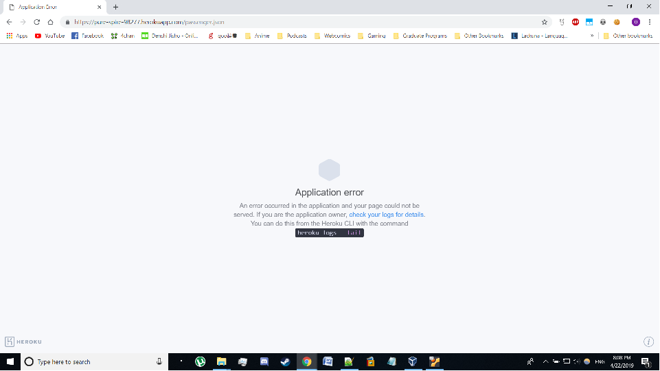
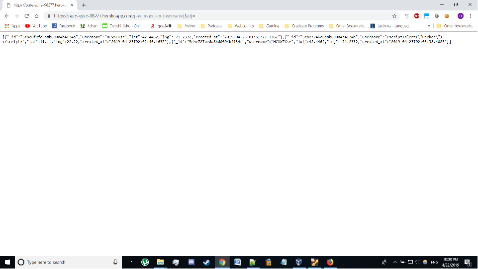
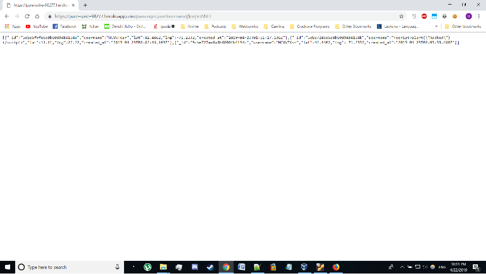
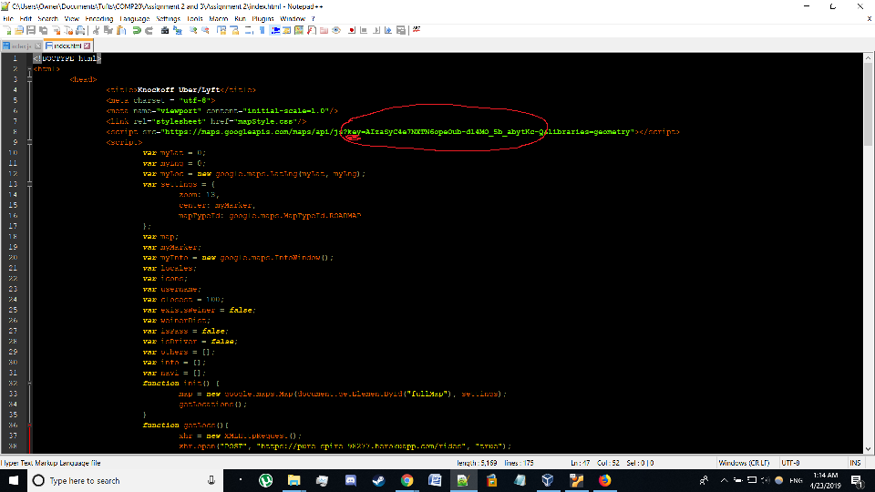
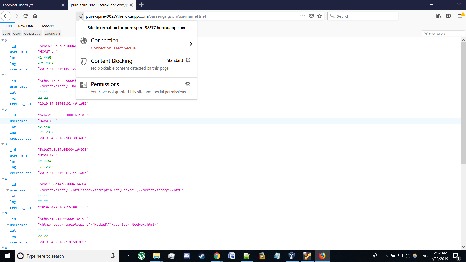

The product is a private car service that allows passengers to locate nearby vehicles and drivers to locate nearby passengers.
My assignment is to evaluate potential security risks in the implementation of all parts of this service and to recommend solutions to these issues.
I began by sending requests to the server routes using Curl and various browsers (primarily Chrome and Firefox), beginning with the test cases listed on Piazza (to confirm basic functionality), and then moving on to attempted XSS and database injection attacks. After encountering crashes that required asking the server's creator to reboot it, I shifted to reading through the source code in order to make more informed attempts to expose vulnerabilities.
Minor typos when searching for passengers can cause the entire server to crash, rendering all aspects of the service unusable until manually restarted by an administrator.
It is possible for anyone to view information, including GPS coordinates and usernames, about any and all passengers who have used the service.
Users of the map display page can view the credentials the service uses to access Google Maps and can then make use of them without the knowledge or permission of the service operator.
Location: index.js (/passenger.json)
Severity: High. Causes a server crash, rendering all routes and pages unusable until a manual report is performed by the server owner.
Description: Calling the GET route "/passenger.json" with any query string that does not contain a properly spelled "username" key causes the server to crash (likely due to a type error). This issue appears to occur because a variable is set equal to the "username" property of the query without first checking that this property exists. I discovered this issue when I accidentally used the query string "?username$ne=" while testing for other issues and vulnerabilities. I later confirmed that this was the cause of the crash by asking the server owner to examine the Heroku logs.
Resolution: Before setting the variable toFind equal to request.query.username (on line 96 of index.js), add an if statement to confirm that this property exists (e.g. if(request.query.username != undefined) {...}, or if(request.query.hasOwnProperty('username')) {...}).
Location: index.js (/passenger.json)
Severity: High. Exposes confidential user data with high potential for misuse, including exact locations, which can be used for stalking, ensuring that a user is away before committing a burglary, etc., and usernames, which can be used to flag down vehicles under false pretenses.
Description: Calling the GET route "/passenger.json" with the query string "?username[$ne]=" or "username[$gt]=" displays all passenger data stored in the database.
 Resolution: Query strings should be validated to remove or escape all operators used by the database before queries are made.
Specifically, I recommend calling Validator's blacklist method on the variable "toFind" (defined on line 96 of index.js) to remove the characters "[," "]," and "$" in addition to calling the normal escape method (also absent at this time) before querying the database on line 102.
Location: index.html
Severity: Moderate/High. Obtaining a Google Maps API key requires enabling billing. If a third party were to copy the key and use it to access premium features, this could run up charges to the card used to purchase the key. In addition, misuse of the key would reflect on the owner's account and could result in the loss of credentials to use the API, which is an essential feature of the front-end site.
Description: The key used to access the Google Maps API is hard-coded into a javascript variable in the front-end HTML page (index.html, line 8). Google's API documentation specifically recommends against this.
Resolution: Google's documentation (developers.google.com/maps/api-key-best-practices) recommends storing keys in environment variables or in include files located outside the application's source repository. Keys can and should also be restricted to use by specific platforms and URLs to minimize risk in the event that a key is obtained by a third party.
Location: index.js
Severity: High. Although index.html makes requests using HTTPS, the potential for all routes to be accessed using unsecure HTTP means that all information sent to and from the server (including all sensitive information listed above) can potentially be intercepted by third parties and misused, just as in leaks caused by lack of database query sanitation.
Description: I tried accessing all routes via HTTP and discovered that all returned data using the same unsecure protocol instead of redirecting the request to HTTPS.
Resolution: Forcibly redirect all HTTP requests to HTTPS in server.js. Various solutions are available to accomplish this in the form of middleware packages or simple coding solutions. If the front-end page is ever hosted, it should also include a similar redirect.
In addition to patching the vulnerabilities listed above, I recommend requiring additional credentials to access user data, as usernames alone are too easily obtained by third parties (especially as usernames are deliberately presented to all users in both the "/" route and the front-end map display).
Displaying long-term vehicle records on "/" is a serious issue, as it allows any user to map the movement patterns of specific drivers. I recommend at minimum limiting these records by time in the same way that the information from the "/rides" route is limited, although this still provides too much data to persistent observers. It might be beneficial to remove other users' usernames from all client-facing displays in order to improve overall security and privacy. Likewise, the expiration period on records in the database should be shortened to avoid potentially exposing data that is no longer necessary for the service to function.